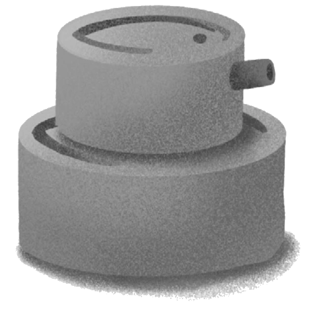

問題與討論

-
以利雅薩在遭受苦待時，曾經產生對上帝的怨懟之心。但在實際經歷上帝的保守之後，他深刻的明瞭到上帝的恩典與慈愛永遠不會離開他。在你的生活中，是否也有過這樣的經驗呢？
-
在故事中，不斷被人們提起、思想的「庇護城」，它設立的目的有那些？
-
當你遇到日常的人際生活中，他人的無心之錯（無心之話），你的第一反應通常是什麼？內心又有那些情緒？看完「庇護城」的故事以後，你覺得在面對他人的「無心之錯」，自己可以有怎樣的調整與改變？
-
「庇護城」保護了無心犯錯的人，也避免讓心懷怨懟的人有再次犯錯的機會。這樣的概念對你來說，有什麼啟發？